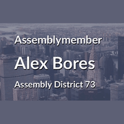
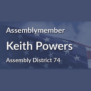
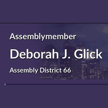

The district
 City Council
City Council State Assembly
State Assembly Congress
Congress Subway
Subway Citi Bike
Citi Bike NYC Ferry
NYC FerryTurn layers on and off. Tap an official's logo or a board's seal for its page. Zoning and land use lot by lot are on the land use map.
About
State Senator Liz Krueger represents State Senate District 28. It sits in Manhattan.
The district overlaps community boards Manhattan 5, Manhattan 6 and Manhattan 8.
It is policed by the 13th, 14th, 17th, 18th, 19th, 22nd and 114th Precincts.
It overlaps council districts 3, 4, 5 and 6 and Assembly districts 67, 73, 75 and 76.
Members of the State Senate serve two year terms.
Next on the ballot in November 2026. Find your poll site and sample ballot there, or see what is coming up on the calendar.
State Senate District 28 in numbers
U.S. Census Bureau, American Community Survey 2019-2023 5-year estimates.
Committees
Contact
Overlap
Community boards


Bars show how many of the district's election districts fall in each board.
Overlapping elected officials








| Manhattan CB 8 | 41% of the senate district | 90% of it |
| Manhattan CB 5 | 34% of the senate district | 94% of it |
| Manhattan park/airport area | 12% of the senate district | 39% of it |
| Manhattan CB 6 | 11% of the senate district | 33% of it |
| Manhattan CB 4 | 2% of the senate district | 6% of it |
| 19 Precinct | 36% of the senate district | 89% of it |
| 18 Precinct | 13% of the senate district | 50% of it |
| 14 Precinct | 13% of the senate district | 77% of it |
| 22 Precinct | 12% of the senate district | 39% of it |
| 17 Precinct | 11% of the senate district | 58% of it |
| 13 Precinct | 9% of the senate district | 38% of it |
| 114 Precinct | 5% of the senate district | 4% of it |
| 10 Precinct | 1% of the senate district | 3% of it |
| Sector 19B | 11% of the senate district | 100% of it |
| Sector 19C | 10% of the senate district | 100% of it |
| Sector 19A | 8% of the senate district | 100% of it |
| Sector 19D | 6% of the senate district | 58% of it |
| Sector 13C | 5% of the senate district | 96% of it |
| Sector 114D | 5% of the senate district | 21% of it |
| Sector 22C | 5% of the senate district | 100% of it |
| Sector 18A | 5% of the senate district | 100% of it |
| Sector 17B | 5% of the senate district | 65% of it |
| Sector 17C | 4% of the senate district | 100% of it |
| Sector 18B | 4% of the senate district | 100% of it |
| Sector 13B | 4% of the senate district | 99% of it |
| School District 2 | 88% of the senate district | 38% of it |
| School District 3 | 12% of the senate district | 13% of it |
| Council District 4 | 41% of the senate district | 74% of it |
| Council District 5 | 27% of the senate district | 87% of it |
| Council District 3 | 15% of the senate district | 23% of it |
| Council District 6 | 14% of the senate district | 21% of it |
| Council District 2 | 3% of the senate district | 8% of it |
| Assembly District 73 | 34% of the senate district | 91% of it |
| Assembly District 75 | 32% of the senate district | 53% of it |
| Assembly District 76 | 23% of the senate district | 91% of it |
| Assembly District 67 | 5% of the senate district | 14% of it |
| Assembly District 74 | 3% of the senate district | 9% of it |
| Assembly District 66 | 2% of the senate district | 3% of it |
| Assembly District 68 | 1% of the senate district | 2% of it |